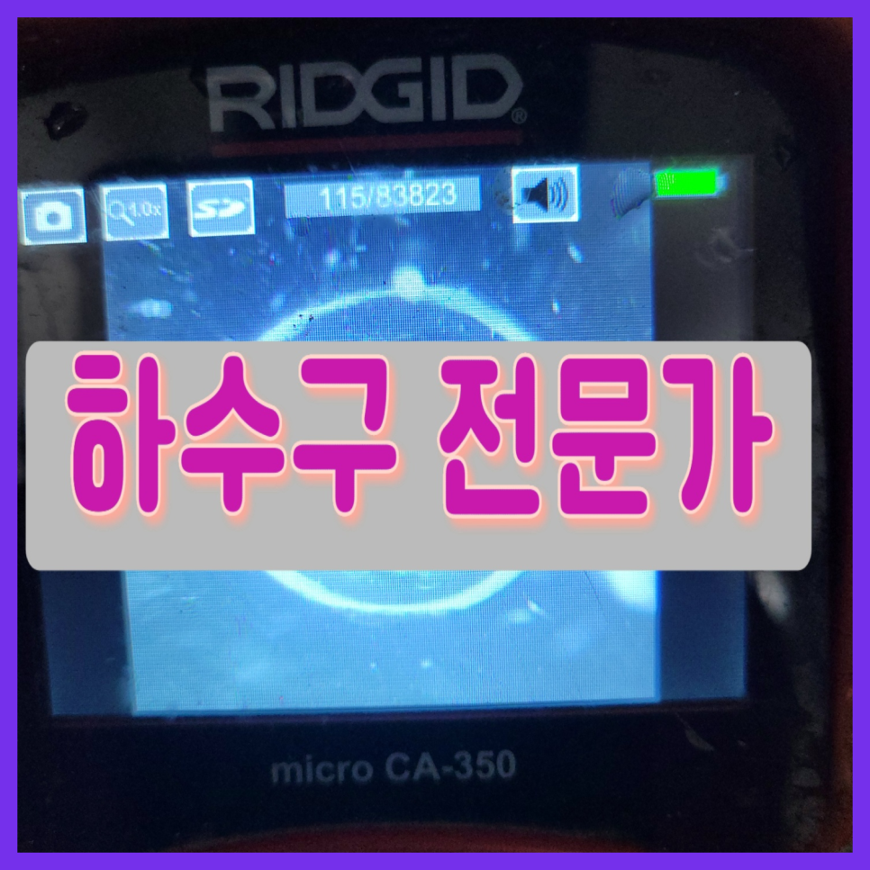
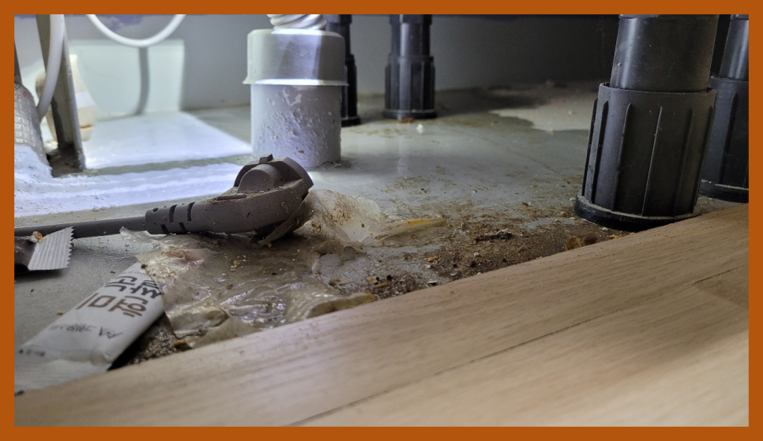
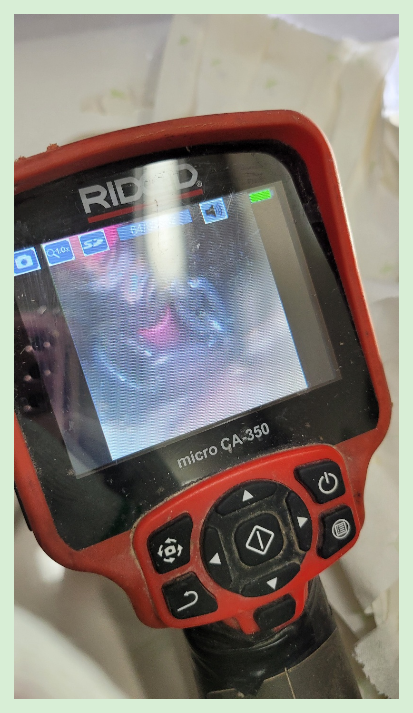
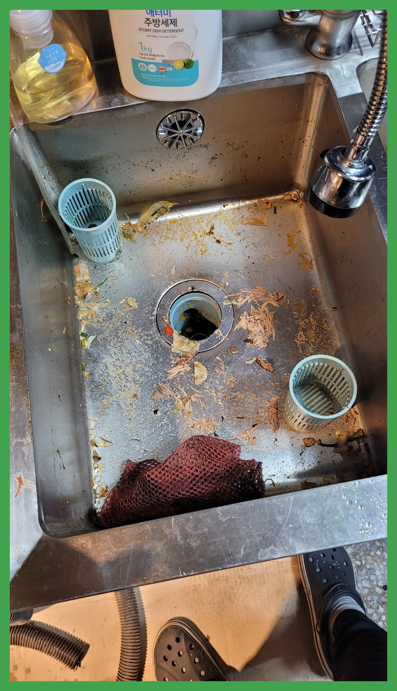
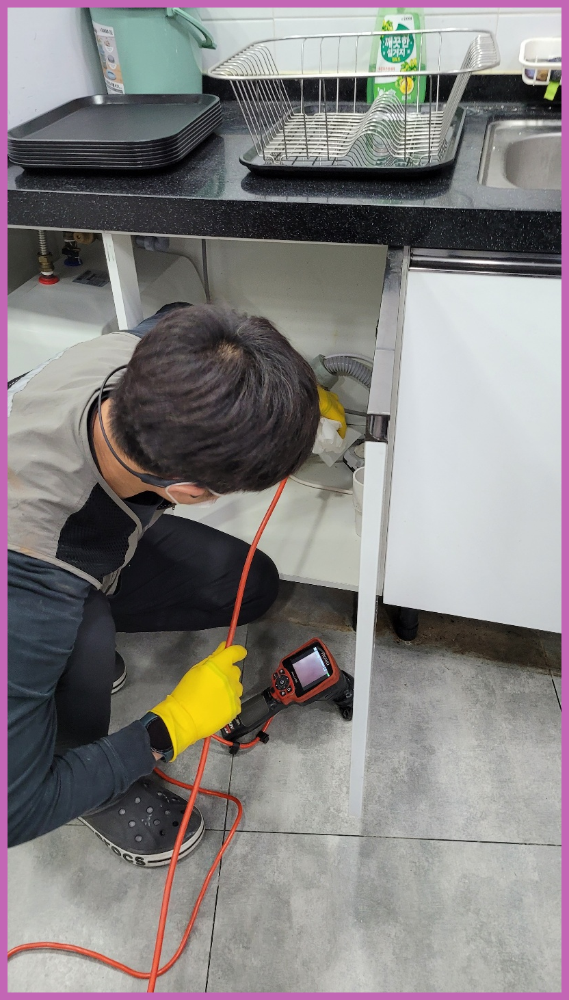
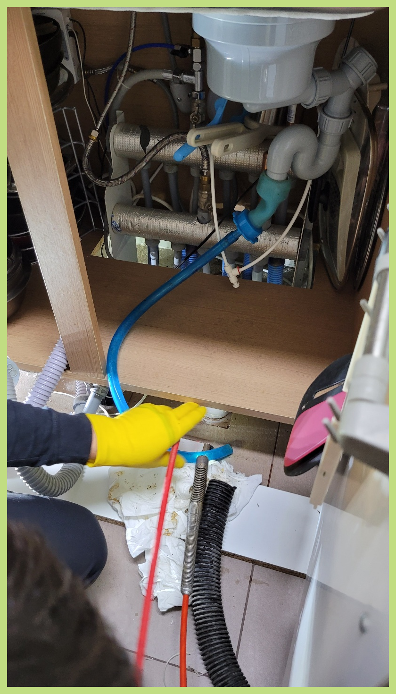
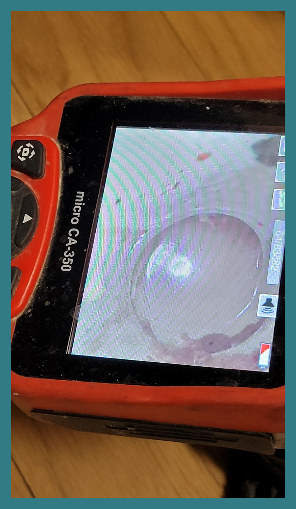

🏠 오산 대원동 싱크대배수구수리 남촌동 하수구막힘뚫음
오산 원동 싱크대막힘 전문 시공 후기

📋 작업 개요
- 위치: 오산 원동, 원동, 오산
- 서비스 유형: 싱크대막힘, 하수구막힘, 배관막힘, 역류해결, 뚫는업체, 배관청소, 고압세척
- 작업 일시: 2023. 9. 12. 23:25
- 업체명: 하수구수사대 (010-5615-2118)
🔍 문제 상황
여러 곳에서도 퇴수구는 우리들의 주위에서 많이 접할 수 있으며 생활하면서 어떠한 경우에도 배제할수 없는 필수품입니다.
일상에서 이용하는거와 달리 배출구 물들이 원활하게 빠져나가지 못해도 변함없이 낳좋아질수 있어서 이 시간부터 집중해주시길 바랍니다.
오산 대원동 싱크대배수구수리 남촌동 하수구막힘뚫음
단순 막힘 말고도 역류 같은 문제처럼 하수에는 생길 수있는 증상들은 매우 많습니다. 그럴 때 전문 업체를 통해 뚫기도 하지만 저렴한 곳만 알아보시는 것은 오히려 나중에 더 큰 피해를 커울수 있다는 것을 말씀 드리고 싶습니다.
대다수분들이 배관이 막힘이 발생되면 그냥 혼자 하다가 처리를 하지못하고 저희 업체를 찾게됩니다. 업체 선정을 잘해야 고객님의 피해를 줄일 수가 있습니다. 하수전문 장비를 보유하고 있는지 배관 구조를 확실하게 파악할줄 알아야 합니다.

🔎 원인 분석
💡 전문가 진단: 오산 대원동 싱크대배수구수리 남촌동 하수구막힘뚫음
어떤 하수 업체든지 내시경을 갖춘 곳을 이용하셔야 하는 가장 큰 이유랍니다. 관리사무소 같은 곳에서는 이런 기계 없이 도와주시기 때문에 정확하게 막힌 지점을 뚫어낼 수가 없어서 수일 안에 다시 막혀버리는 것입니다.
수많은 분들이 업체들을이 이용했어도 또 하수막힘증상이 발생되어 반복적으로 더 돈을 내고 청소하게 되는것을 잘못 지여져 있는게 원인이 아닌 똑바로 세척하지 않은 것 때문입니다.
하수의 경우에는 오염 물질 등이 계속해서 통과한다는 특징을 가지고 있는데요. 이러한 점으로 인해 악취 또는 오염이 발생할 가능성이 큰 장소라고 할 수 있어요.
배출구마다 거름망이 있지만 작은 사이즈의 이물질들은 통과될 가능성이 있습니다.처음에는 아주 소량의 이물질만이 통과하여 배수관에 자리를 잡기 시작하였겠지만 오랫동안 시간이 흐르면서 많은 양의 음식물 찌꺼기와 기름때 슬러지 덩어리가 함꼐 뭉쳐가면서 배관을 막게됩니다.
기름이 우리가 생각할때는 액체상태지만 요리를 하고 난 후에는 식재료의성분이 섞인 기름이 됩니다. 조리를 한 뒤에느 기름이 굳으면 하얗게 변하게 된답니다. 이러한 기름은 배수구배관 속에서 굳으면 벽에 붙어 단단하게 고정이 됩니다.

🔧 작업 과정
만일배관 카메라가없다면 통로에 뭐가있는건지 침전물이 얼마나 침전됐는지 확인할수 없는상태에서 처리해야됩니다. 일시적으로 물이흐르지만 다시막혀버리므로 하수통로를 철저하게파악하고 빈틈없이 해결하는게 좋다고말할수있어요
이렇기때문에상담하실때 위급한목소리로 도움을청하기도하는데요.그저놔두기만하면 증상이완화될까요? 그러시지는 않겠지만 이용하지않고 냅두셔도퇴수구 안에머물러있는 음식물쓰레기가 내뿜는냄새는 설명하기가 어려울정도에요
배수구 안에 누적된 침전물들은 자연스럽게 사라지는게아니고 계속쌓이다가 크기가부풀면서 엄청난일이 일어나게되는데요.
어느곳에 의뢰해야 괴로운일을 벗어나게될까요? 블로그에 많이있는 많고많은 배출구 배관회사들중 어디로골라야 하는지 어려우실겁니다.경력자분들마다 수리방법도 다르고 견적비용이 다틀려서 처음으로 뚫으신다면 어찌해야할지 모를수있습니다.
어느 정도 기계를 작동시킨 뒤 배관 안쪽을 다시 카메라를 넣어 확인하였고, 앞전과는 다르게 깨끗하게 청소된 배출구배관 모습을 눈으로 확인할 수 있었습니다.
첨단 장비를 이용하여 최고의 기술자들이 해결해 드리는 배수구배관 케어 서비스를 가장 빨리 수도권 전 지역에서 받아보실 수 있습니다. 원하시는 시간에도 맞춰드리는 맞춤 서비스로 배수구배관 문제 해결사로 불리는 저희에게 맡겨보세요.
퇴수구배관을 막히게 한 이물질은 앞선 현장의 석회처럼 제거하기 어려운 종류는 아니었습니다. 화장실에서는 샤워할 때 우리 몸에서 나오는 유분기도 시간이 지나면서 찌꺼기화되는데요, 그러면서 굳기 때문에 그런 부분과 머리카락이 뭉치로 들어가 있었습니다.
>


✅ 작업 완료
공휴일에 막히기라도 하면 대다수의 분들이 발등에 불이 떨어져 퇴수구 안에 이상한 물건들을 넣고 휘젓는다거나 빠뜨려 버리시는 등의 예측 불가능한 행동으로 상황을 더욱 악화시켜 버리는 경우가 많습니다.
어떤 현장이든 만족스러운 결과물을 고객님들에게 최대한 보여드리기 위해서 최신장비를 총동원하여 해결해 드리니 걱정마시고 언제든지 연락주시기 바랍니다.
<동영상2.MP4,오산하수구막힘>




⚠️ 주방 싱크대 배관 막힘 예방 수칙
- ✅ 기름기가 묻은 식기나 프라이팬은 설거지 전 키친타올로 반드시 기름때를 닦아내세요.
- ✅ 주기적으로 싱크대 개수대에 뜨거운 물을 가득 받아 한 번에 내려 배관 내부 기름을 씻어내세요.
- ✅ 배수구 거름망을 미세한 필터로 사용하시고 음식물 찌꺼기가 틈으로 새어 들지 않게 관리하세요.
- ✅ 베이킹소다와 식초를 뜨거운 물과 함께 일주일에 한 번씩 부어주면 배관 살균과 막힘 예방에 좋습니다.
💡 핵심 정리
- 확실한 장비 작업(내시경 점검 및 샤프트 스케일링)으로 원인을 뿌리 뽑습니다.
- 작업 후 1년 이내에 동일한 부위 재발 시 100% 무상 A/S 서비스를 보장합니다.
- 서울 · 경기 · 인천 전 지역에 24시간 언제든 긴급 출동할 수 있도록 항시 대기 중입니다.
❓ 자주 묻는 질문 (FAQ)
🚨 오산 원동 싱크대막힘 문제로 고민이신가요?
정확한 원인 진단과 확실한 시공으로 재발 없는 해결을 약속드립니다.
24시간 긴급 출동 | 서울 · 경기 · 인천 전지역 | 1년 내 재발 시 무상 A/S